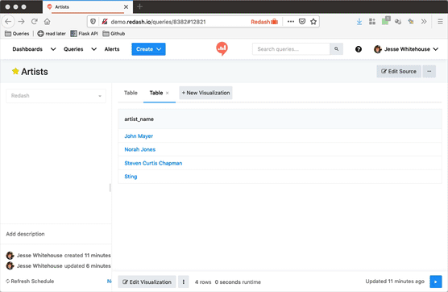

Im making a multi dashboard environment, where the user can move from one dashboard to another using a link.
I need to maintain the filter values he has chosen in the first dashboard when he moves to the second.
Is that possible?
This site is in read only mode. Please continue to browse, but replying, likes,
and other actions are disabled for now.
Yes, you can do this using the Link data type for certain columns. The same way you can use {{ @ }} to represent the value of the current column you can use the names of other columns instead of @. Or you can code the link by hand.
For example, imagine you build a dashboard that gives an overview of statistics for a musical artist. The dashboard is called artist-dash and you can switch the artist with a parameter called artist. The URL for this dashboard might look like this if your selected artist is John Mayer:
https://${ROOT}/dashboards/artist-dash?p_artist=John%20Mayer
artist-dash includes a table view called table-duet that shows artists with whom p_artist has collaborated.
You also build a dashboard called duet-artist-dash that shows statistics for any combination of two artists, assuming they’ve performed together. It takes two parameters artist1 and artist2.
You can hotlink from artist-dash to duet-artist-dash easily via the duet-artist table. The query behind duet-artist might look like this:
SELECT
'<a href="${ROOT}/dashboards/duet-artist-dash?p_artist1={{ artist }}&p_artist2=' || guest_artist_name || '">' || guest_artist_name || '</a>'
FROM
tablename
WHERE
album_artist = '{{ artist }}'
Or you can use the Link table type with a query like this:
SELECT album_artist, guest_artist_name FROM tablename WHERE album_artist = '{{ artist }}'
And set the link text as follows:
${ROOT}/dashboards/duet-artist-dash?p_artist1={{ album_artist }}&p_artist2={{ @ }}
Either one will produce the result that when a user clicks on a guest artist, they will be carried to a new dashboard narrowed by two parameters.
This isn’t restricted to dashboards either. You can do the same thing with queries as well.
I made a demonstration gif using a simple set of queries on our demo instance:

2 Likes
Very nice.
This is what i needed.
Thankyou for going through all the hassle and the quick response, really appreciate the effort esp the gif.
1 Like